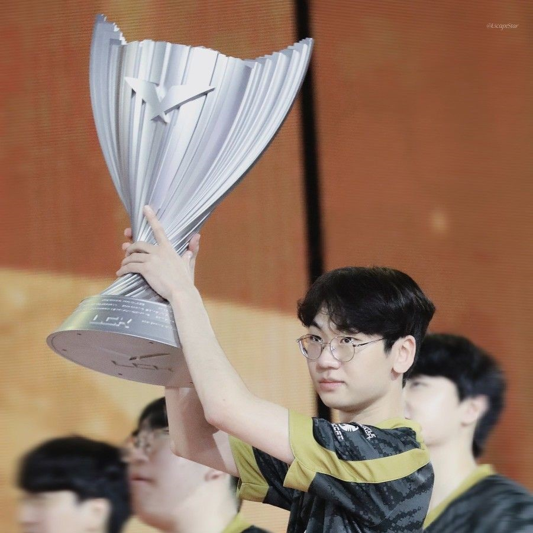
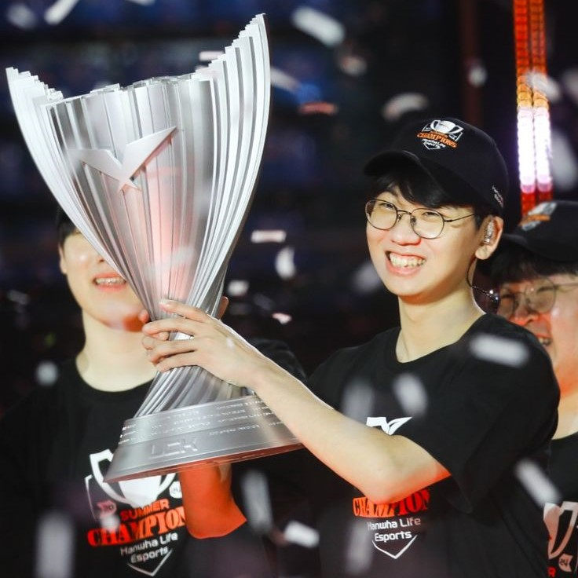
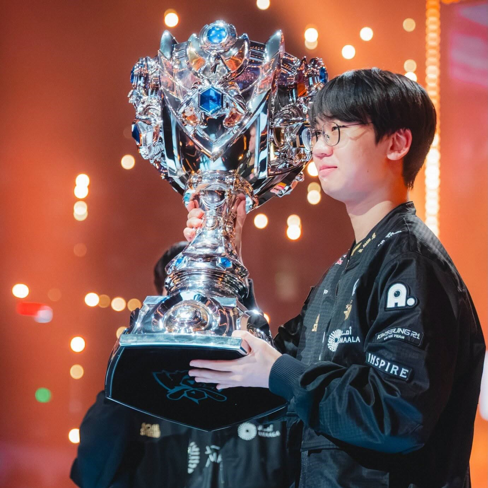

Legendary Domestic & International Titles
Entering his 8th professional season, Doran stands as the active top laner with the most LCK titles in history, featuring an extraordinary 64.2% win rate across more than 780 professional games.

Gen.G (2022-2023): Historic Three-peat LCK champion (Summer 2022, Spring 2023, Summer 2023).

HLE (2024): Defeated Gen.G 3-2 in Gyeongju to claim the historic LCK Summer 2024 title.

T1 (2025): Crowned World Champion and KeSPA Cup winner alongside T1.

T1 Lineup: Doran, Oner, Faker, Peyz, and Keria united.
Signature Highlight in 2025
I'll be going over the Top 20 Plays by Doran in 2025, featuring his best moments from the LCK & MSI!